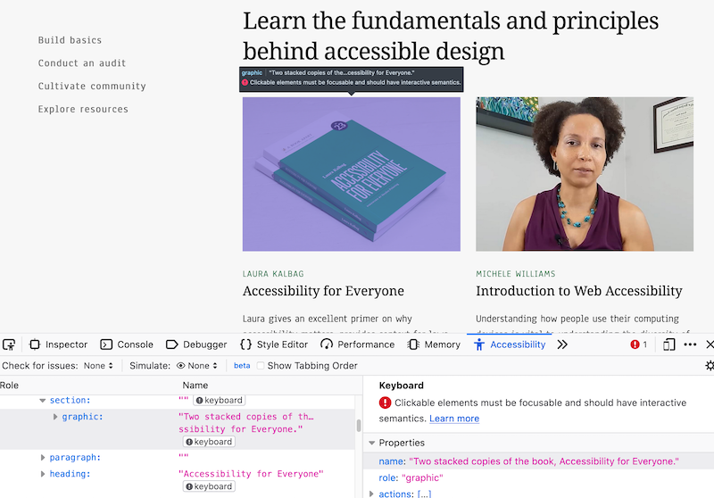
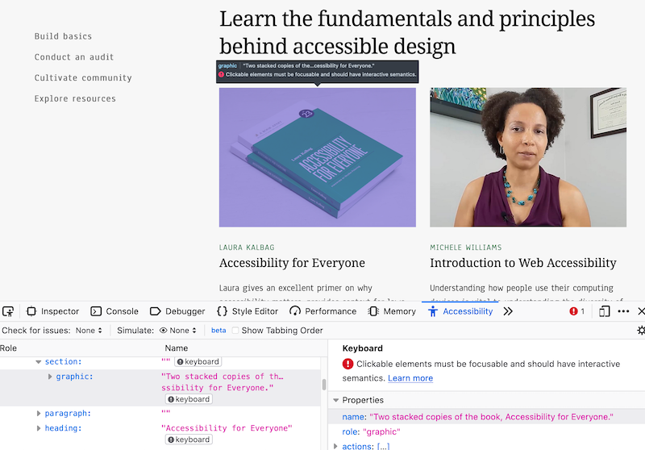
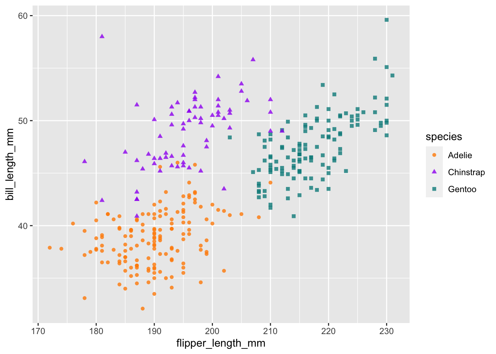
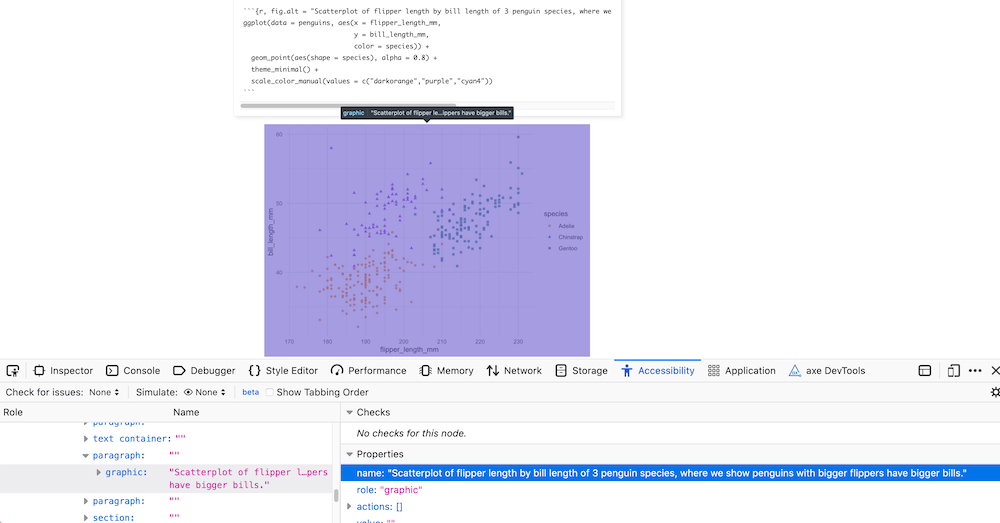
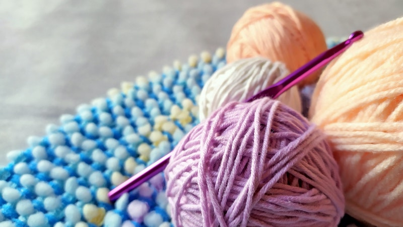

2021-04-20
We are happy to share that knitr (https://yihui.org/knitr/) version 1.32 is now on CRAN. knitr is a package that executes all code embedded within an .Rmd file, and prepares the code output to be displayed within the R Markdown output document.
| Latest release |
|---|
You can install the latest version from CRAN:
install.packages("knitr")The latest version of the package includes an important new chunk option to add alternative text to figures produced in code chunks. This improves the accessibility of your knitted HTML outputs, and in the rest of this post, we wanted to show users how to effectively use this new code chunk option.
First of all, what is alt text? Here is the definition of alt text from Webaim:
It is read by screen readers in place of images allowing the content and function of the image to be accessible to those with visual or certain cognitive disabilities.
It is displayed in place of the image in browsers if the image file is not loaded or when the user has chosen not to view images.
It provides a semantic meaning and description to images which can be read by search engines or be used to later determine the content of the image from page context alone.
Here is an example from the a11y project website:

You can see that the alt text for the image highlighted in purple says:
“Two stacked copies of the book, Accessibility for Everyone.”
This works well, but what about adding alt text for figures you produce with code? Previously, with code chunks that produced figures, knitr used the figure caption to create the alt text, and there was no way to create a caption and alt text for figures separately. This feature was originally requested by Dr. Mine Dogucu.
Why would you want to provide different caption and alt text for figures? As JooYoung Seo pointed out, figure captions are used for relatively concise figure titles, whereas image alt text is intended to deliver more descriptive text-based information for assistive technologies like screen readers. Moreover, a screen reader will read both the caption and alt text, so using the same text for both can be frustrating to the user1.
You can now set the alt text using the new knitr code chunk option fig.alt for HTML-based R Markdown output (we explain below what happens with other output formats). We’ll use data from the palmerpenguins package to illustrate usage with a ggplot2 plot.
# install packages to run locally
# install.packages("palmerpenguins")
# install.packages("ggplot2")
library(palmerpenguins)
library(ggplot2)Here is a scatterplot to start:
```{r, fig.alt = "Scatterplot of flipper length by bill length of 3 penguin species, where we show penguins with bigger flippers have bigger bills."}
ggplot(data = penguins, aes(x = flipper_length_mm,
y = bill_length_mm,
color = species)) +
geom_point(aes(shape = species), alpha = 0.8) +
scale_color_manual(values = c("darkorange","purple","cyan4"))
```
Here is a visual check of the alt text that a screen reader could access, using “Inspect Accessibility Properties” in Firefox:

You may use your browser inspector to check that the alt text is set properly. Browsers have specific Accessibility inspectors, for example:
Firefox: Accessibility Inspector
Chrome: Accessibility features reference
This chunk option can take either a single string or a vector of strings as input as well, if a code chunk produces more than one plot. For example:
```{r, fig.alt = c("Informative alt text for plot 1", "Informative alt text for plot 2")}
plot1
plot2
```By default, if you do not provide the fig.alt chunk option, the text in the figure caption provided by the fig.cap chunk option will be used as the alt text. You do not have to use fig.cap to use fig.alt- you may use each chunk option in isolation, but they will also work together.
```{r fig.cap="Bigger flippers, bigger bills", fig.alt = "Scatterplot of flipper length by bill length of 3 penguin species, where we show penguins with bigger flippers have bigger bills."}
ggplot(data = penguins, aes(x = flipper_length_mm,
y = bill_length_mm,
color = species)) +
geom_point(aes(shape = species), alpha = 0.8) +
scale_color_manual(values = c("darkorange","purple","cyan4"))
```Since fig.alt was introduced in an earlier knitr release (v1.31), it gave us the opportunity to get and respond to feedback from early adopters. One feature requested by Dr. Mine Çetinkaya-Rundel was to make it possible to reuse alt text across code chunks. Many knitr users reuse code chunks using ref.label as a chunk option, and it would be nice for fig.alt (and other chunk options) to “come along for the ride” with the code.
Let’s look at an example. Do you remember the penguins plot above? We can add a name to the code chunk so that we can reuse it later:
```{r penguins, fig.alt = "Scatterplot of flipper length by bill length of 3 penguin species, where we show penguins with bigger flippers have bigger bills.", fig.cap = "Bigger flippers, bigger bills"}
# plotting code here
```Elsewhere in your document, if you’d like to show the same plot, you can use ref.label='chunk_label' as a chunk option with an empty chunk. With knitr 1.32, if you’d like to show the same plot with the same chunk options, you can combine ref.label='chunk_label' and opts.label = TRUE to carry over the chunk options when reusing the chunk. It does not matter if the code chunks referenced are before or after the code chunk that uses ref.label. An early code chunk can reference a chunk later in the same document.
For example, this empty chunk:
```{r ref.label = 'penguins', opts.label = TRUE}
```Produces this plot:
By setting opts.label = TRUE, the plot and all its chunk options were carried over, including the caption and alt text. Without it, only the code chunk would have been reused. You can also override any of the previously used chunk options by setting them again in this new code chunk. For example, we can change the fig.cap:
```{r ref.label = 'penguins', opts.label = TRUE, fig.cap = "Penguin plot, take 3"}
```Produces this plot:
By adding fig.cap, we have overridden the figure caption initially set in the original chunk.
To find out more, you may take a look at the new knitr example. If you are not familiar with these options, you can find the documentation for knitr options at https://yihui.org/knitr/options/. To learn more about saving and reusing sets of chunk options with knitr, you can read more about opts.label and options templates in the R Markdown cookbook. The special value opts.label = TRUE shown above means opts.label = ref.label, i.e., to inherit chunk options from chunks referenced by the ref.label option.
For static images, you can include a figure caption using Markdown syntax:
By default, this activates the implicit_figures extension from Pandoc with output formats like html_document. This will lead to the same text being used for both captions and alt text. Setting fig_caption: FALSE in the YAML of your html_document would prevent the caption if you only wanted to set the alt text. However, then you cannot have figure captions. Unfortunately, Pandoc does not yet offer a way to differentiate between figure captions and alt text. To work around this limitation, the fig.alt code chunk option can be used with knitr::include_graphics:
```{r, fig.alt = "Crochet (not knitting!) needle with colorful yarn", out.width="25%"}
knitr::include_graphics("thumbnail.jpg")
```
There is one major limitation to this feature, which is that it is currently limited to HTML-based output formats. We mentioned earlier that the default behavior is to use the figure caption provided by the fig.cap chunk option if you do not provide the fig.alt chunk option. This is true still for non-HTML based output formats like Word .docx documents: they will only respect fig.cap. You can follow this issue on GitHub to see our progress toward addressing this limitation in a future release.
You may learn more about how to write more informative alt text for data visualization in this Nightingale article.
Some additional resources:
Sincere thanks to Liz Hare for recommending these and other resources on Twitter, and to Silvia Canelón for sharing them with us.
This latest release introduces numerous new features and bug fixes as well. You can read the release notes to review all of the changes. A big thanks to the other 55 contributors who helped with the previous two knitr releases by discussing problems, proposing features, and contributing code in the knitr repo on Github:
@abhsarma, @alusiani, @andrew-fuller, @apreshill, @arencambre, @aschersleben, @atusy, @beanumber, @Bisaloo, @bounlu, @cderv, @cpsievert, @cysouw, @davidwales, @deb-m, @dmenne, @dmurdoch, @egoipse, @ekatko1, @elbersb, @englianhu, @GitHunter0, @gsrohde, @hermandr, @iago-pssjd, @iMarcello, @jamarav, @jangorecki, @jimhester, @jooyoungseo, @julieinsan, @karoliskoncevicius, @kbvernon, @kmcbest, @knokknok, @krivit, @ktrutmann, @LTLA, @matthewgson, @mine-cetinkaya-rundel, @MonteShaffer, @msgoussi, @muschellij2, @NickCH-K, @phargarten2, @rasyidstat, @rcst, @rnorberg, @rundel, @StephenGerry, @thompsonsed, @tomschenkjr, @TTT12-dumb-dumb, @XiangyunHuang, and @yihui.